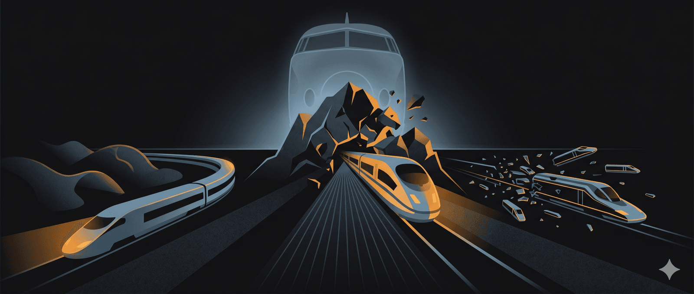

CUỘC ĐUA CỦA NHỮNG VIÊN ĐẠN THÉP KHỔNG LỒ: ĐƯỜNG SẮT CAO TỐC CHÂU ÂU
Năm 1964, khi chiếc Shinkansen đầu tiên lướt qua đồng bằng Kantō với tốc độ 210 km/h, các kỹ sư châu Âu đứng sững. Trước đó họ vẫn nghĩ mình dẫn đầu thế giới về đường sắt nhưng giờ đây họ phát hiện ra mình đã nhầm.
Nhật Bản vừa chứng minh một điều mà phương Tây không tin vào, rằng đường sắt không phải công nghệ của quá khứ. Rằng bánh thép trên ray thép có thể đánh bại máy bay. Rằng một quốc gia có thể viết lại quy luật vật lý của giao thông nếu đủ quyết tâm.
Cú sốc ấy có một cái tên trong giới nghiên cứu phương Tây “Hội chứng Tokaido”. Và nó sẽ châm ngòi cho một cuộc đua kéo dài nửa thế kỷ.
Nhưng đây không chỉ là câu chuyện về tàu nhanh, đằng sau là câu chuyện về cách con người đối mặt với những thách thức tưởng như không thể vượt qua. Đó là những trở ngại về thiên khi có những ngọn núi phải đục thủng để xây những đường hầm xuyên qua, những đầm lầy phải được khắc chế để tạo ra những nền móng ổn định, những con sông phải được bắc cầu qua. Đó là nỗ lực và cố gắng của con người khi những kỹ sư phải thiết kế lại mọi thứ từ đầu khi khủng hoảng ập đến. Về những chính trị gia phải đánh cược sự nghiệp vào những dự án mà không ai tin sẽ thành công.
Và về cái giá phải trả khi sự tự mãn che mờ những dấu hiệu cảnh báo.
Pháp: khủng hoảng có thể lại là cơ hội
Nếu phải chọn một câu chuyện điển hình nhất về nghịch cảnh và chiến thắng, đó sẽ là TGV của Pháp.
Câu chuyện bắt đầu từ những năm 1960, khi các kỹ sư của SNCF nhìn thấy Shinkansen và hiểu rằng nếu không hành động, đường sắt Pháp sẽ chết. Hàng không nội địa đang bùng nổ. Ô tô đang chiếm lĩnh mọi ngả đường. Đường sắt, với hình ảnh chậm chạp và lỗi thời, đang dần trở thành ký ức của thế hệ ông bà.
Họ bắt tay vào nghiên cứu. Thử nghiệm. Tính toán. Và đến năm 1972, họ cho ra đời TGV-001, một con quái vật chạy bằng turbine khí có thể đạt hơn 300 km/h. Đây là bước nhảy vọt công nghệ mà không ai ngờ tới. Pháp sắp có tàu nhanh nhất thế giới.
Rồi năm 1973, thế giới đổi khác vì một biến cố toàn cầu.
Biến cố đó chính là cuộc khủng hoảng dầu mỏ, và nó cũng ập đến một cách bất ngờ. Giá dầu tăng gấp bốn lần trong vài tháng. Turbine khí, vốn ngốn nhiên liệu như nước, đột nhiên trở thành ý tưởng điên rồ. Toàn bộ thiết kế mà các kỹ sư đã dày công nghiên cứu suốt nhiều năm bỗng chốc thành đống giấy vụn.
Đây là lúc mà hầu hết dự án sẽ chết. Nhưng các kỹ sư SNCF nhìn thấy điều khác. Họ nhận ra rằng khủng hoảng dầu không chỉ giết chết turbine khí. Nó còn tạo ra một lý do mới, mạnh mẽ hơn bao giờ hết, để xây dựng đường sắt cao tốc.
Và vì thời điểm đó Pháp đang xây dựng ồ ạt nhà máy điện hạt nhân. Và điện, không giống dầu, là thứ mà Pháp có thể tự sản xuất.
Họ thiết kế lại toàn bộ. Chuyển từ turbine khí sang động cơ điện. Đây không phải là sửa đổi nhỏ. Đây là viết lại mọi thứ từ đầu. Prototype mới mang tên “Zébulon” được chế tạo và thử nghiệm ròng rã 20 tháng, chạy gần một triệu km, trong đó 25.000 km ở tốc độ trên 300 km/h. Hơn 15.000 chỉnh sửa được thực hiện. Vấn đề rung động ở tốc độ cao khiến hành khách không thể chịu nổi. Các kỹ sư mất hàng tháng trời mới tìm ra giải pháp, một giải pháp đơn giản đến ngạc nhiên là chèn các khối cao su vào hệ thống treo.
Nhưng thách thức kỹ thuật không phải là rào cản lớn nhất.
Tổng thống Pompidou ủng hộ dự án và ký sắc lệnh phê duyệt vào năm 1974 nhưng cũng thật trớ trêu ba ngày sau, ông qua đời. Người kế nhiệm, Valéry Giscard d’Estaing, là kẻ thù gay gắt của TGV. Ông ta tin vào Aérotrain, một loại tàu đệm khí “hiện đại” hơn. Bánh thép trên ray thép, theo ông, là công nghệ không phù hợp.
Suốt nửa cuối thập niên 1970, dự án bị cản trở, trì hoãn, gặm nhấm từng chút một. Các nhóm áp lực địa phương biểu tình phản đối tuyến đường đi qua vùng đất của họ. Chính quyền trung ương lơ là. Ngân sách bị cắt giảm.
Nhưng dự án sống sót nhờ một điều mà tư duy hệ thống gọi là “liên minh ngầm”. Các kỹ sư SNCF, các nhà công nghiệp như Alstom, và một nhóm chính trị gia địa phương đã tạo thành một mạng lưới ủng hộ. Họ giữ dự án thở trong khi chờ thời cơ.
Năm 1981, Mitterrand lên nắm quyền. Ông ta nhìn thấy những gì người tiền nhiệm không thấy rằng TGV không chỉ là một con tàu, mà là biểu tượng của nước Pháp hiện đại.
Ngày 27 tháng 9 năm 1981, TGV chính thức khai trương tuyến Paris-Lyon. Tốc độ 270 km/h. Thời gian di chuyển giảm từ gần 4 giờ xuống còn 2 giờ. Chi phí xây dựng là 8,2 tỷ franc, gần đúng với ngân sách dự kiến ban đầu. Và điều đáng kinh ngạc nhất, dự án tự hoàn vốn chỉ trong một thập kỷ.
Trước TGV, 31% hành khách Paris-Lyon đi máy bay. Sau TGV, con số đó giảm xuống còn 7%. Thị phần đường sắt tăng từ 40% lên 72%. Hàng không bị “đánh gục” trên chính sân nhà.
Một bí mật ít người biết: chi phí xây dựng TGV thuộc hàng thấp nhất thế giới. Lý do nằm ở triết lý thiết kế. Thay vì đào hầm xuyên núi như Nhật Bản hay Đức, các kỹ sư Pháp chọn cách bám theo địa hình tự nhiên. Tàu TGV được thiết kế với tỷ lệ công suất trên trọng lượng cao, cho phép leo dốc tốt hơn. Điều này giảm đáng kể chi phí xây dựng cầu và hầm.
Đó là tư duy thích nghi. Thay vì ép thực tế vào mô hình lý tưởng, họ điều chỉnh giải pháp để phù hợp với thực tế.
Bài học từ Pháp: Trong hệ thống phức hợp, khủng hoảng không nhất thiết là kết thúc. Nó có thể là điểm chuyển pha, nơi cấu hình cũ tan rã để cấu hình mới trồi sinh. Điều quyết định là ai nhìn thấy cơ hội trong hỗn loạn, và ai sẵn sàng thiết kế lại mọi thứ từ đầu.
Đức: Ảo tưởng về sự hoàn hảo là một kẻ thù nguy hiểm
Nếu Pháp là câu chuyện về sự thích nghi, thì Đức là câu chuyện về cái giá của sự ảo tưởng về hoàn hảo.
Người Đức bắt đầu xây dựng đường sắt cao tốc gần như cùng lúc với Pháp. Nhưng họ gặp phải một thách thức mà người Pháp không có là địa hình.
Nước Đức không phẳng như đồng bằng Pháp. Tuyến đường từ Hanover đến Würzburg, dài 327 km, phải xuyên qua những vùng đồi núi liên miên. Để giữ độ dốc ở mức cho phép, các kỹ sư phải đào 63 đường hầm và xây 34 cây cầu lớn. Con số này gấp nhiều lần so với bất kỳ tuyến TGV nào của Pháp.
Tuyến Cologne-Frankfurt còn khắc nghiệt hơn. 180 km đường ray phải băng qua ba dãy núi Siebengebirge, Westerwald và Taunus. Địa chất ở đây chủ yếu là đá Devonian bị phong hóa sâu, nằm dưới các lớp trầm tích kỷ Đệ tam và Đệ tứ. Điều này có nghĩa là nền đất không ổn định, dễ sụt lún khi chịu tải trọng lớn.
Các kỹ sư phải đối mặt với một vấn đề mà ít ai lường trước. Ở tốc độ 300 km/h, rung động từ tàu có thể gây ra hiện tượng hóa lỏng và dịch chuyển ngang trong các lớp cát mịn. Họ phải phát triển các kỹ thuật ổn định đất hoàn toàn mới, trộn vite hoặc xi măng vào đất để cải thiện khả năng chịu tải.
Đường hầm Irlahull dài 7,2 km phải đào xuyên qua vùng đá cứng, với tiết diện lớn 11 mét cao và 12,8 mét rộng. Đường hầm Offenbau 1,3 km gặp phải nước ngầm bất ngờ, làm chậm tiến độ hàng tháng.
Tổng cộng, tuyến Cologne-Frankfurt có 30 đường hầm và 18 cây cầu, trong đó có hai cầu dài 420 và 750 mét.
Nhưng thách thức lớn nhất không đến từ địa chất. Nó đến từ pháp lý.
Hệ thống pháp luật Đức cho phép bất kỳ ai bị ảnh hưởng bởi dự án đều có quyền khởi kiện. Và họ đã làm vậy. Hàng loạt các vụ kiện kéo dài nhiều năm, buộc các kỹ sư phải thay đổi tuyến đường nhiều lần. Một đoạn được gọi là “Tuyến Thỏa thuận” dài 19 km phải xây thêm đường hầm, mở rộng hai hầm khác, và thay cầu bằng hào có nắp đậy. Chi phí phát sinh và thời gian trì hoãn lên đến hàng năm.
Kết quả là ICE của Đức chỉ khai trương vào năm 1991, đúng mười năm sau TGV của Pháp.
Nhưng khi đã chạy, ICE hoạt động như một cỗ máy hoàn hảo. Suốt bảy năm đầu tiên, không một tai nạn chết người. Không một sự cố nghiêm trọng. Deutsche Bahn tự hào tuyệt đối. Hành khách tin tưởng tuyệt đối.
Rồi ngày 3 tháng 6 năm 1998, mọi thứ sụp đổ.
Tàu ICE 884 đang lao đi với tốc độ 200 km/h gần thị trấn Eschede, miền Bắc nước Đức. Trên tàu có 287 hành khách.
Lúc 10h59, một vòng thép trên bánh xe toa số 3 gãy ra. Mảnh kim loại xuyên qua sàn tàu, đâm lên ghế ngồi. Một hành khách nhìn thấy, chạy đi tìm nhân viên tàu báo cáo.
Tàu vẫn chạy.
Hai phút sau, mảnh vỡ mắc vào bộ ghi đường ray, kéo lệch hướng chạy. Toa số 3 trật bánh, đâm vào trụ cầu vượt. Cầu sập xuống, nghiền nát hai toa giữa. Các toa còn lại lao vào đống đổ nát, gấp lại như cái thước gấp.
101 người chết. 88 người bị thương nặng. Đây là thảm họa đường sắt cao tốc tồi tệ nhất trong lịch sử loài người.
Điều tra sau đó phát hiện một sự thật rùng mình. Hai tháng trước vụ tai nạn, tám nhân viên tàu khác nhau đã báo cáo tiếng ồn và rung động bất thường từ bánh xe đó. Tám lần. Nhưng công ty đã không thay thế.
Tại sao?
Vì họ tin vào hệ thống. Vì bảy năm không có tai nạn đã tạo ra một niềm tin mù quáng rằng tai nạn sẽ không bao giờ xảy ra. Vì khi tín hiệu cảnh báo xuất hiện, không ai muốn là người đầu tiên nói rằng hệ thống có vấn đề.
Trong ngôn ngữ của khoa học phức hợp, đây là hiện tượng “phục hồi chậm trước ngưỡng”. Hệ thống đã tiến gần đến điểm sụp đổ, nhưng không ai nhìn thấy bởi mọi thứ bề ngoài vẫn vận hành trơn tru. Những dấu hiệu cảnh báo bị bỏ qua vì chúng không phù hợp với câu chuyện mà mọi người đang tin.
Sau Eschede, tiêu chuẩn an toàn được siết chặt đáng kể. Các yêu cầu về đường hầm thay đổi: cửa thoát hiểm phải có mỗi 1 km thay vì xa hơn, tiết diện mở rộng từ 13 m² lên 28 m² để xe cứu hộ có thể vào được. Hàng trăm mét đường hầm phải đào thêm.
Và đến hôm nay, hơn 25 năm sau, hệ thống đường sắt Đức vẫn đang vật lộn với di sản của những quyết định trong quá khứ. Tháng 10 năm 2024, chỉ một nửa số tàu đường dài của Deutsche Bahn đến đúng giờ. Hạ tầng xuống cấp vì thiếu đầu tư. Các tuyến đường phải đóng cửa hàng tháng để đại tu sau 35 năm hoạt động.
Bài học từ Đức: Thành công kéo dài có thể tạo ra quán tính nhận thức. Khi tín hiệu cảnh báo bị bỏ qua vì “chưa bao giờ có vấn đề”, hệ thống đang tích lũy căng thẳng ẩn. Và khi căng thẳng vượt ngưỡng, nó không từ từ leo thang. Nó nổ tung.
Nếu Vin chọn hãng Simen của Đức làm tối tác thì cũng phải nhớ đến bài học này, ở khía cạnh nào đó khi người Đức đã phải trả giá vì ăn trái đắng có thể họ sẽ thận trọng và kỷ luật hơn vì bài học đủ sâu sắc
Tây Ban Nha: chinh phục được những ngọn núi nhưng lại thua các nhóm lợi ích.
Nếu Pháp thắng nhờ thích nghi và Đức thua vì tự mãn, thì Tây Ban Nha là câu chuyện phức tạp hơn nhiều. Đây là quốc gia chinh phục được những thách thức kỹ thuật khổng lồ, nhưng lại tự tạo ra những vấn đề mà không ai ép buộc.
Trước hết, hãy nói về địa hình. Bán đảo Iberia có một trong những địa hình phức tạp nhất châu Âu. Cao nguyên Meseta ở trung tâm bị ngăn cách với các vùng ven biển bởi những dãy núi liên tiếp. Từ Madrid đi về bất kỳ hướng nào, bạn đều phải vượt qua núi.
Để xây đường sắt cao tốc với độ dốc không quá 3%, các kỹ sư phải đào hàng trăm đường hầm và xây hàng trăm cây cầu. Tổng đầu tư cho mạng lưới đã vượt 55 tỷ euro.
Nhưng đó chưa phải là thách thức lớn nhất.
Đường sắt Tây Ban Nha có một đặc điểm lịch sử khiến mọi thứ phức tạp gấp bội. Từ thế kỷ 19, Tây Ban Nha sử dụng khổ đường ray Iberian 1.668 mm, rộng hơn đáng kể so với khổ tiêu chuẩn châu Âu 1.435 mm. Điều này có nghĩa là tàu Tây Ban Nha không thể chạy sang các nước láng giềng, và ngược lại.
Khi quyết định xây dựng đường sắt cao tốc, chính phủ Tây Ban Nha đứng trước hai lựa chọn. Một là tiếp tục sử dụng khổ Iberian và bị cô lập vĩnh viễn. Hai là chuyển sang khổ tiêu chuẩn và phải xây dựng một mạng lưới hoàn toàn mới, không thể kết nối với đường sắt cũ.
Họ chọn phương án thứ hai. Và để giải quyết vấn đề kết nối, họ phát triển công nghệ đổi khổ cho phép tàu chuyển đổi giữa hai loại đường ray. Đây là một thành tựu kỹ thuật đáng ngưỡng mộ.
Tuyến đường từ Madrid đến vùng Galicia phía tây bắc có lẽ là ví dụ điển hình nhất về thách thức địa hình. 68 dặm đường ray phải xuyên qua dãy núi Galician Massif, trong đó hơn 60% là đường hầm và cầu. 30 cầu cạn, 30 cây cầu, và vô số đường hầm nhỏ.
Đường hầm Pajares, dài gần 25 km xuyên qua dãy Cantabrian, là một trong những công trình đường sắt phức tạp nhất châu Âu. Năm máy đào hầm TBM làm việc đồng thời trong suốt 20 năm. Địa chất phức tạp với nhiều tầng ngậm nước gây ra tình trạng ngập nước liên tục, làm chậm tiến độ nhiều lần. Dự án bị đe dọa hủy bỏ không ít lần.
Cuối cùng, đường hầm hoàn thành vào tháng 11 năm 2024, trở thành đường hầm đường sắt dài thứ bảy châu Âu. Chi phí lên đến 4,4 tỷ đô la.
Với tất cả những thành tựu kỹ thuật đó, Tây Ban Nha hiện sở hữu mạng lưới đường sắt cao tốc lớn nhất châu Âu với gần 4.000 km, chỉ đứng sau Trung Quốc trên toàn thế giới. Tàu đúng giờ 98,5%. Công nghệ hiện đại hàng đầu.
Nhưng bên dưới bề mặt hào nhoáng ấy là những vết nứt mà ít người nói đến.
Năm 2016, El País công bố một điều tra gây sốc. Cứ bốn nhà ga AVE thì có một ga được sử dụng bởi dưới 100 hành khách mỗi ngày. Những nhà ga khổng lồ, hiện đại, được xây ở những thị trấn nhỏ bé không có đủ người để lấp đầy một toa tàu.
Tại sao?
Vì chính trị. Mỗi vùng của Tây Ban Nha muốn có AVE của riêng mình. Mỗi chính trị gia địa phương coi đường sắt cao tốc như thành tích để tranh cử. Và khi chính trị quyết định tuyến đường thay vì nhu cầu thực tế, kết quả là những cây cầu dẫn đến hư vô.
Một nghiên cứu so sánh cho thấy sự chênh lệch đáng kinh ngạc. Năm 2015, Tây Ban Nha có khoảng 12.000 hành khách trên mỗi km đường sắt cao tốc. Pháp có 61.400. Nhật Bản có 158.121. Nói cách khác, đường sắt Tây Ban Nha được sử dụng ít hơn gấp 5 lần so với Pháp và 13 lần so với Nhật Bản.
Và rồi có chuyện khác.
Năm 2021, Ủy ban Cạnh tranh Quốc gia Tây Ban Nha phát hiện một bí mật động trời. Tám công ty lớn nhất trong ngành bao gồm Alstom, Bombardier, Siemens, Thales đã lập thành Cartel để phân chia gian lận ít nhất 82 gói thầu trong suốt 15 năm, từ 2002 đến 2017. Tổng giá trị các hợp đồng bị thao túng lên đến 4,14 tỷ euro.
Suốt 15 năm, người dân Tây Ban Nha đã trả giá cao hơn cho đường sắt cao tốc để nuôi béo một cartel độc quyền.
Điều đáng nói nhất là thời điểm. Trong giai đoạn khủng hoảng tài chính 2008-2014, khi Tây Ban Nha phải xin cứu trợ 100 tỷ euro từ châu Âu, khi tỷ lệ thất nghiệp thanh niên vượt 50%, việc xây dựng AVE vẫn tiếp tục ào ạt. Tiền đổ vào đường sắt trong khi người dân không có việc làm.
Dù vậy, chi phí xây dựng của Tây Ban Nha vẫn thuộc hàng thấp nhất châu Âu khoảng 14,7 triệu euro mỗi km. So với 20-30 triệu ở Pháp và 50-60 triệu ở một số nước khác, đây là con số ấn tượng. Vấn đề không phải là chi phí quá cao, mà là đầu tư vào những nơi không có nhu cầu.
Bài học từ Tây Ban Nha: Trong hệ thống phức hợp, chỉ số đo lường quyết định hành vi. Khi “thành công” được đo bằng số km đường ray thay vì số hành khách sử dụng, hệ thống sẽ tối ưu hóa cho việc xây thêm đường ray, bất kể có ai đi hay không. Và khi không có ai kiểm tra người kiểm tra, tham nhũng len lỏi vào mọi ngóc ngách.
Nhìn lại từ góc độ hệ thống
Ba câu chuyện về 3 quốc gia tiên tiến nhất trong ngành đường sắt châu Âu với 3 cách tiếp cận khác nhau. Nhưng khi đặt cạnh nhau, chúng bắt đầu hé lộ những quy luật chung mà tư duy tuyến tính không thể nhìn thấy.
Quy luật thứ nhất: Thách thức kỹ thuật có thể vượt qua, thách thức hệ thống thì khó hơn
Cả ba nước đều đối mặt với những thách thức kỹ thuật khổng lồ. Pháp phải thiết kế lại toàn bộ hệ thống động cơ khi khủng hoảng dầu ập đến. Đức phải đào hàng chục đường hầm xuyên núi và xử lý địa chất phức tạp. Tây Ban Nha phải chinh phục địa hình khắc nghiệt nhất châu Âu và giải quyết vấn đề khổ đường ray khác biệt.
Và tất cả đều thành công. Kỹ sư giỏi, nguồn lực đủ, thời gian đủ thì thách thức kỹ thuật có thể vượt qua.
Nhưng những thách thức hệ thống lại khác. Quán tính nhận thức ở Đức khiến tám cảnh báo bị bỏ qua. Tham vọng chính trị ở Tây Ban Nha dẫn đến việc xây dựng những nhà ga không ai sử dụng. Cartel tồn tại 15 năm mà không bị phát hiện. Đây là những vấn đề mà tiền và công nghệ không giải quyết được.
Quy luật thứ hai: Khủng hoảng là bài kiểm tra năng lực thích nghi
Pháp gặp khủng hoảng dầu mỏ 1973 và biến nó thành cơ hội để chuyển sang điện. Tây Ban Nha gặp khủng hoảng tài chính 2008 nhưng vẫn tiếp tục xây dựng ào ạt, không điều chỉnh kế hoạch theo thực tế mới. Đức gặp Eschede 1998 và siết chặt tiêu chuẩn an toàn, nhưng không giải quyết được vấn đề quán tính trong văn hóa tổ chức.
Khủng hoảng không tự nó tốt hay xấu. Nó là bài kiểm tra. Những hệ thống có khả năng học hỏi và thích nghi sẽ trở nên mạnh hơn. Những hệ thống cứng nhắc sẽ tiếp tục con đường cũ cho đến khi gặp khủng hoảng lớn hơn.
Quy luật thứ ba: Tín hiệu bị bóp méo dẫn đến quyết định sai
Ở Đức, tín hiệu cảnh báo từ nhân viên bị bỏ qua vì không phù hợp với câu chuyện “chưa bao giờ có vấn đề”. Ở Tây Ban Nha, “thành công” được đo bằng km đường ray thay vì hành khách, dẫn đến việc xây dựng ở những nơi không có nhu cầu.
Trong cả hai trường hợp, vấn đề không phải là thiếu thông tin vì thông tin có đầy đủ mà vấn đề là hệ thống xử lý thông tin bị lỗi. Những tín hiệu không thuận lợi bị lọc bỏ hoặc bóp méo trước khi đến được người ra quyết định.
Đây là điều mà Nhân quả cấu hình gọi là “bẫy salience”. Chúng ta có xu hướng gán nguyên nhân cho những biến dễ quan sát nhất, trong khi những yếu tố thực sự quan trọng thường ẩn sâu trong cấu trúc hệ thống.
Quy luật thứ tư: Không có giải pháp kỹ thuật cho vấn đề chính trị
Pháp thành công một phần vì có tầm nhìn quốc gia thống nhất. TGV được xem như biểu tượng của nước Pháp hiện đại, và liên minh ngầm giữa kỹ sư, công nghiệp và một số chính trị gia đã bảo vệ dự án qua nhiều đời tổng thống.
Tây Ban Nha có công nghệ tốt không kém, nhưng thiếu một tầm nhìn thống nhất. Mỗi vùng đòi có AVE riêng. Mỗi chính trị gia muốn có thành tích riêng. Kết quả là một mạng lưới rộng lớn nhưng thiếu hiệu quả.
Những dự án hạ tầng lớn cần thời gian vượt quá một nhiệm kỳ. Nếu không có cơ chế bảo vệ khỏi biến động chính trị và lợi ích cục bộ, chúng sẽ bị kéo về nhiều hướng khác nhau cho đến khi mất hết tính nhất quán.
Đường sắt và bài học cho các hệ thống khác.
Tại sao câu chuyện về đường sắt cao tốc đáng để quan tâm, ngay cả với những người không bao giờ đi tàu?
Vì đường sắt là hình ảnh thu nhỏ của mọi hệ thống phức hợp.
Nó đòi hỏi tầm nhìn dài hạn trong môi trường ngắn hạn. Nó cần sự phối hợp giữa hàng chục cơ quan, hàng ngàn nhà thầu, hàng triệu quyết định nhỏ. Nó phải đối mặt với kỳ vọng của công chúng, áp lực của chính trị, giới hạn của vật lý và sự thất thường của địa chất. Và mỗi sai lầm, mỗi thành công, đều được ghi lại bằng máu và tiền.
Khi Pháp thành công với TGV, họ không chỉ xây một con tàu. Họ xây dựng một hệ sinh thái công nghiệp xuất khẩu đến hơn 25 quốc gia. Khi Đức thất bại ở Eschede, họ không chỉ mất 101 mạng người. Họ mất niềm tin vào cả một cách làm việc. Và khi Tây Ban Nha xây những nhà ga không ai sử dụng, họ không chỉ lãng phí tiền bạc. Họ tạo ra một tiền lệ nguy hiểm về cách phân bổ nguồn lực quốc gia.
Cuối cùng, đường sắt cao tốc là một bài kiểm tra. Bài kiểm tra về khả năng một xã hội chạy theo tương lai mà quên mất hiện tại. Về khả năng các thể chế học hỏi từ sai lầm. Về khả năng những cá nhân dũng cảm nói ra sự thật, ngay cả khi mọi người xung quanh đều muốn tin vào điều ngược lại.
Những chiếc tàu vẫn đang chạy. Ở Paris, ở Frankfurt, ở Madrid. Qua những đường hầm dài hàng chục km mà con người đã đục xuyên núi để tạo ra. Trên những cây cầu vắt qua thung lũng mà tổ tiên chúng ta từng nghĩ là không thể vượt qua.
Câu hỏi không phải là tàu có chạy hay không. Câu hỏi là chúng ta học được gì từ hành trình của chúng.
Không phải hệ thống nào cũng cần đường sắt cao tốc. Nhưng mọi hệ thống đều cần khả năng nhìn xa, học từ thất bại, và biết khi nào một tín hiệu cảnh báo đáng được lắng nghe.
Các bài trong series về đường sắt cao tốc
Đường sắt cao tốc Việt Nam: https://shorturl.at/SMoXz
Đường sắt cao tốc châu Âu: https://shorturl.at/9ljQj
Đường sắt cao tốc Nhật Bản https://shorturl.at/55uGl
Đường sắt cao tốc Trung Quốc https://shorturl.at/vo7gX
🔍 Phân tích bài viết
📌 Tóm tắt ý chính
Ba quốc gia tiên phong đường sắt cao tốc châu Âu — Pháp, Đức, Tây Ban Nha — đều chinh phục được thách thức kỹ thuật khổng lồ nhưng lại va vấp với những thách thức hệ thống khác nhau: Pháp biến khủng hoảng dầu mỏ thành cơ hội chuyển đổi sang điện và thành công vang dội; Đức để thành tích 7 năm hoàn hảo tạo ra sự tự mãn dẫn đến thảm họa Eschede 101 người chết; Tây Ban Nha chinh phục địa hình tàn bạo nhất nhưng để chính trị địa phương biến hạ tầng thành công trình “không ai dùng” và cartel thao túng 4,14 tỷ euro. Câu chuyện cốt lõi không phải về công nghệ — mà về cách con người và thể chế xử lý thông tin, khủng hoảng, và quyền lực.
🗺️ Mindmap
💡 Insight & Góc nhìn đa chiều
Hội chứng Tokaido là nguyên mẫu của disruption shock. Năm 1964, Nhật Bản không chỉ ra mắt một con tàu — họ invalidate một mô hình tư duy. Châu Âu mất gần 20 năm để hấp thu cú sốc đó, và mỗi nước hấp thu theo cách khác nhau tùy vào thể chế.
“Liên minh ngầm” mới là thứ bảo vệ dự án dài hạn. Ở Pháp, không phải một tổng thống hay một bộ trưởng cứu TGV — mà là mạng lưới phi chính thức giữa kỹ sư, nhà công nghiệp (Alstom) và chính trị gia địa phương. Đây là cấu trúc quyền lực ẩn mà tư duy tuyến tính bỏ qua, nhưng lại là thứ quyết định số phận dự án mega-infrastructure.
Ai thực sự hưởng lợi từ mạng lưới rộng nhưng thưa của Tây Ban Nha? Các công ty xây dựng và nhà thầu — không phải người dân. Khi “thành công” được đo bằng số km đường ray thay vì hiệu quả sử dụng, incentive sẽ bóp méo toàn bộ hệ sinh thái. Cartel 15 năm không phải sự kiện đột biến — nó là kết quả logic của một hệ thống đo sai chỉ số.
Bẫy “phục hồi chậm trước ngưỡng” phổ biến hơn ta tưởng. Eschede không phải chỉ là câu chuyện của Deutsche Bahn. Mọi tổ chức có track record tốt đều tạo ra vùng mù tương tự: thành công quá khứ trở thành filter loại bỏ tín hiệu cảnh báo không phù hợp với narrative.
Địa hình vật lý tương đồng với địa hình thể chế. Đức và Tây Ban Nha phải đào hầm qua núi. Pháp thì bám địa hình tự nhiên. Điều thú vị: cách mỗi nước xử lý địa hình vật lý phản chiếu chính xác cách họ xử lý địa hình chính trị — Pháp thích nghi, Đức kiên trì vượt qua bằng công nghệ, Tây Ban Nha tổng lực nhưng phân tán.
⚖️ Phản biện
Bài viết lý tưởng hóa thành công của Pháp. TGV Paris-Lyon hoàn vốn vì nó nối hai đô thị lớn nhất với mật độ dân số cao nhất nước Pháp — điều kiện lý tưởng hiếm có. Các tuyến TGV sau đó (Paris-Bordeaux, LGV Est) có hiệu quả kinh tế thấp hơn nhiều và cần trợ cấp liên tục. Kết luận “thích nghi = thành công” cần được kiểm chứng trên toàn mạng lưới, không chỉ tuyến flagship.
So sánh mật độ hành khách không công bằng. Nhật Bản 158.121 HK/km vs Tây Ban Nha 12.000 HK/km là so sánh giữa một quốc gia hình dải đất hẹp với 127 triệu dân tập trung ven biển, với một bán đảo địa hình phức tạp dân số phân tán. Bản thân địa lý đã tạo ra cách biệt tự nhiên — không thể gán hoàn toàn cho quyết định chính trị.
Vụ cartel là thất bại của EU, không chỉ của Tây Ban Nha. Alstom, Siemens, Bombardier — đây là các tập đoàn đa quốc gia châu Âu. Việc họ thoải mái gian lận 15 năm đặt câu hỏi về năng lực giám sát của cả hệ thống đấu thầu công EU, không chỉ riêng cơ quan cạnh tranh Tây Ban Nha.
Bài học từ Đức bị đơn giản hóa. Sau Eschede, Deutsche Bahn đã cải thiện rất nhiều về an toàn. Vấn đề đúng giờ năm 2024 phần lớn đến từ hạ tầng cũ và thiếu đầu tư thời Thatcher-style privatization, không phải từ văn hóa tự mãn còn sót lại.
❓ Câu hỏi mở
-
Trong dự án đường sắt cao tốc Bắc-Nam của Việt Nam, cơ chế nào bảo vệ “liên minh ngầm” ủng hộ dự án khỏi biến động chính trị qua nhiều kỳ Đại hội Đảng? Hay Việt Nam đang phụ thuộc vào ý chí chính trị của một thời điểm cụ thể?
-
Khi Tây Ban Nha xây những nhà ga không ai sử dụng, xã hội dân sự và báo chí (El País) đã phát hiện — nhưng không ngăn được. Điều kiện nào giúp tín hiệu cảnh báo không chỉ được “phát hiện” mà còn thực sự thay đổi quyết định?
-
Deutsche Bahn đang “vật lộn với di sản của những quyết định trong quá khứ” sau 35 năm — hạ tầng có vòng đời riêng, dài hơn nhiệm kỳ chính trị. Làm thế nào để thiết kế thể chế đủ kiên nhẫn để bảo trì thứ mình đã xây?
🇻🇳 Liên hệ Việt Nam
Dự án ĐSCT Bắc-Nam 67 tỷ USD đang ở đúng giai đoạn mà cả ba nước châu Âu từng trải qua — quyết tâm chính trị cao, địa hình phức tạp (địa hình Việt Nam tương đồng Tây Ban Nha hơn Pháp), và áp lực chính trị địa phương từng tỉnh muốn có ga.
Rủi ro “Tây Ban Nha hóa” là cao nhất: khi 63 tỉnh thành đều muốn có ga ĐSCT và KPI được đo bằng số tỉnh có ga, không phải hành khách thực tế, sẽ tạo áp lực xây dựng ở những nơi không có đủ nhu cầu. Bài học: ga nên đặt tại nơi có nhu cầu thực, không phải nơi có chính trị gia quyền lực nhất.
Rủi ro “thảm họa Eschede” liên quan đến văn hóa báo cáo sự cố. Nếu “chưa bao giờ có vấn đề” được hiểu là thành tích, thay vì là khoảng thời gian chưa phát hiện vấn đề, tám cảnh báo sẽ lại bị bỏ qua ở một đất nước khác.
Chọn đối tác công nghệ cũng là bài học từ ba nước: Pháp tự phát triển (Alstom), Đức tự phát triển (Siemens), Tây Ban Nha dùng cả hai và bị cả hai cartel hóa. Việt Nam nhiều khả năng mua công nghệ nước ngoài — cần cơ chế đấu thầu độc lập và minh bạch để tránh lặp lại kịch bản Tây Ban Nha.
Chuỗi cung ứng nội địa là cơ hội: Pháp biến TGV thành hệ sinh thái xuất khẩu 25 quốc gia. Nếu dự án ĐSCT VN được thiết kế để tối đa hóa nội địa hóa, nó có thể trở thành nền tảng cho ngành cơ khí chính xác, điện tử tín hiệu, và dịch vụ kỹ thuật — thay vì chỉ là hạ tầng nhập khẩu.
📖 Giải thích thuật ngữ
Hội chứng Tokaido (Tokaido Syndrome): Cú sốc tâm lý mà các kỹ sư và nhà hoạch định phương Tây trải qua khi chứng kiến Shinkansen Nhật Bản hoạt động năm 1964. Giống như khi bạn nghĩ mình đang dẫn đầu cuộc chạy, rồi quay lại thấy người khác đã vượt qua từ lúc nào.
Điểm chuyển pha (Phase transition): Thuật ngữ từ vật lý, mô tả khoảnh khắc hệ thống chuyển từ trạng thái này sang trạng thái khác — như nước từ lỏng sang băng. Trong bài: khủng hoảng dầu mỏ là “nhiệt độ” đủ để buộc TGV chuyển pha từ turbine khí sang điện.
Phục hồi chậm trước ngưỡng (Critical slowing down): Hiện tượng trong hệ thống phức hợp: khi hệ thống tiến gần đến điểm sụp đổ, nó phục hồi ngày càng chậm hơn sau mỗi cú sốc nhỏ. Dấu hiệu cảnh báo ngầm. Ở Eschede: bánh xe đã bị hỏng từ từ trong nhiều tháng, nhưng không ai nhận ra hệ thống đang “chậm phục hồi”.
Bẫy salience (Salience trap): Xu hướng tâm lý gán nguyên nhân cho thứ dễ nhìn thấy nhất, bỏ qua nguyên nhân ẩn sâu hơn. Ở Tây Ban Nha: mọi người nhìn thấy số km đường ray (dễ đo), không thấy hiệu quả sử dụng thực tế (khó đo và không ai muốn đo).
Cartel: Nhóm công ty cạnh tranh bí mật thỏa thuận với nhau để chia thị trường, thao túng giá thầu, loại trừ cạnh tranh. Giống như mấy hàng phở trong một con phố bí mật thỏa thuận giá — người thiệt là khách hàng.
Khổ đường Iberian (1.668mm): Khoảng cách giữa hai ray của Tây Ban Nha, rộng hơn tiêu chuẩn châu Âu (1.435mm) vì lý do lịch sử từ thế kỷ 19. Hậu quả: tàu Tây Ban Nha không chạy được sang Pháp — như xe tải Việt Nam không thể vào cảng thiết kế cho xe container châu Âu.
TBM (Tunnel Boring Machine): Máy đào hầm khổng lồ hình trụ, đường kính lên đến 15m, hoạt động như con sâu đất cơ học, đào và gia cố hầm đồng thời. Đường hầm Pajares của Tây Ban Nha dùng 5 chiếc TBM chạy song song suốt 20 năm.